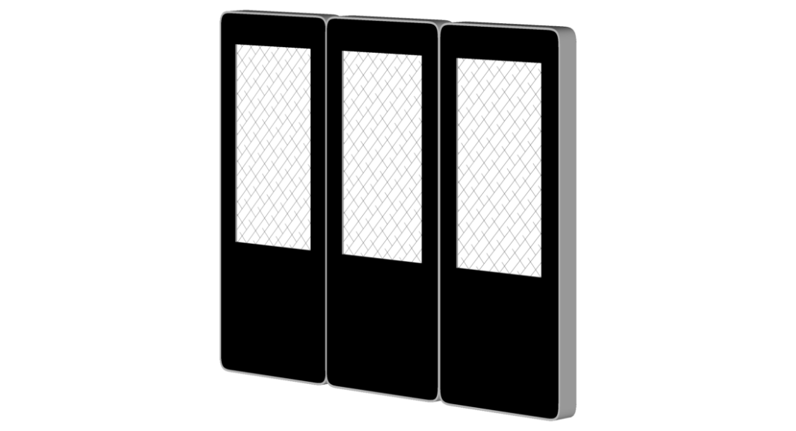
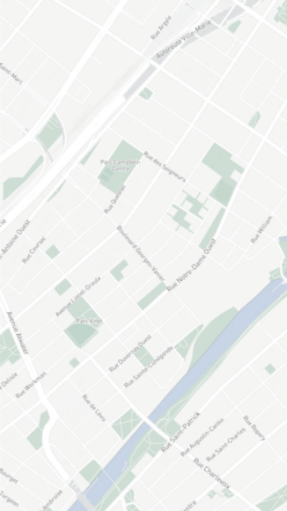
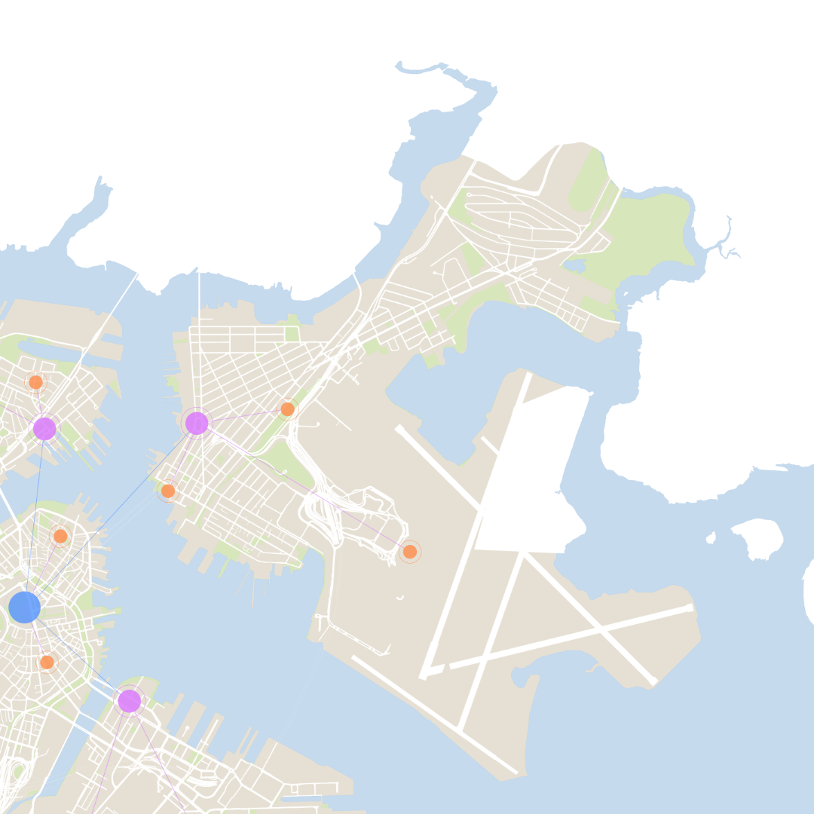

Community Engagement in East Boston
Community engagement typically plays one of the most crucial roles in the neighborhood planning process as
planners and developers use feedback from the community to determine how to best plan and develop new policies
and physical spaces tailored to the unique needs of the community. A planning process which is conduced well
considers the need of all residents, businesses, and industries of an existing neighborhood and works with these
groups to create a space which benefits all equally. However, the current engagement strategies which are
deployed by planners and developers are naturally flawed and onducted without providing proper
resources and opportunity to everyone in the neighborhood. As a result, the policy and development of our
neighborhoods are tailored to the few who have the accessibility and opportunity to engage while the majority
have their needs ignored. It is our responsibility, as architects, planners, and designers, to ensure that we
work in the best interest of everyone involved.
In East Boston, community engagement methods, which have been mostly unchanged for decades, have historically
and consistently resulted in planning
studies that have failed to gather the widespread and diverse engagement needed to make decisions based on the neighborhoods best interest. Language barriers, time constraints, complex information and travel requirements are just a part of a combination of obstacles which create an existing engagement process which is inequitable and inaccessible to many members of the community.
studies that have failed to gather the widespread and diverse engagement needed to make decisions based on the neighborhoods best interest. Language barriers, time constraints, complex information and travel requirements are just a part of a combination of obstacles which create an existing engagement process which is inequitable and inaccessible to many members of the community.
Community Engagement in East Boston
Community engagement typically plays one of the most crucial roles in the neighborhood planning process as
planners and developers use feedback from the community to determine how to best plan and develop new policies
and physical spaces tailored to the unique needs of the community. A planning process which is conduced well
considers the need of all residents, businesses, and industries of an existing neighborhood and works with these
groups to create a space which benefits all equally. However, the current engagement strategies which are
deployed by planners and developers are naturally flawed and onducted without providing proper
resources and opportunity to everyone in the neighborhood. As a result, the policy and development of our
neighborhoods are tailored to the few who have the accessibility and opportunity to engage while the majority
have their needs ignored. It is our responsibility, as architects, planners, and designers, to ensure that we
work in the best interest of everyone involved.
In East Boston, community engagement methods, which have been mostly unchanged for decades, have historically
and consistently resulted in planning
studies that have failed to gather the widespread and diverse engagement needed to make decisions based on the neighborhoods best interest. Language barriers, time constraints, complex information and travel requirements are just a part of a combination of obstacles which create an existing engagement process which is inequitable and inaccessible to many members of the community.
studies that have failed to gather the widespread and diverse engagement needed to make decisions based on the neighborhoods best interest. Language barriers, time constraints, complex information and travel requirements are just a part of a combination of obstacles which create an existing engagement process which is inequitable and inaccessible to many members of the community.


“The public has a lot of pent-up distrust with the city when it comes to our planning efforts. Some members of
the community know or still remember what we did to the West End and believe that any BPDA involvement could
lead to the same fate for their own neighborhoods.”
Chris Breen
BPDA
BPDA
Sara Matasci
coUr
coUr
John Walkey
Community Activist
Community Activist
“Right now the community engagement process is dominated by relatively few, very passionate people, and while
removing barriers to access is critical, a massive part of the challenge is making the average person feel
like what happens in their community matters.”
“Marty Walsh moved to change the image of the BPDA, but unfortunately, the leadership has not changed, and
their mindset has not changed. So, there’s a weird situation at the BPDA at the moment where there is an
internal struggle between people who actually want to work on engaging the community while the people who are
still in power want to continue with business as usual.”
Reconnecting our Neighborhood
East Boston, due to its geographical location, is physically separated from the rest of the city. This
disconnection has played a role in historic planning, zoning, and engagement malpractice resulting in
residents and local business feeling underserved and under appreciated.
Reinventing our Story
It is important for us to redefine how the city, its residents, and its business work together to create a
place that works for us all. A creation of a toolkit which acts as a guide to create community wide success
metrics, suggestions for existing or proposed new software and technology solutions, instructive yet
interesting educational materials, and suggestions for entertaining methods of engagement.

Designing our Solution
To better understand the needs of our neighborhoods and to improve on the importance of strengthening
communication between the city, its residents, business, and its communities, we will develop a physical
network of digital community displays.
The Community Display Board
Digital community boards give the City of Boston a chance to directly connect each of our individual
communities with their neighborhoods and to the city. Now we can communicate, learn, and evolve
together.

Standalone
Mobile
Daisy Chain
Unlimited standalone displayed chained together to create a greater interactive experience for indoor or very
high foot traffic areas.
Standalone display with the addition of a towable rack. Suitable for development projects and temporary
environments.
Permanent display for central nodes, areas of high foot traffic, and space for interactivity.
Visualizing our Community
Redefining what it means to educate, information, and communicate with our local neighborhoods through modern,
transparent, and easy to understand digital infrastructure.
Project Info & Data
Timeline & Calendar
Communication


With displays strategically placed within East Boston and throughout the rest of the city, residents,
businesses, and tourists are able to connect and communicate with one another like never before.
Always on and interactive displays placed in high foot traffic areas will allow for the display of useful
information like upcoming planning events, community events, and nearby project completion timelines.
Virtual public displays can be used to showcase relevant community information and data, such as neighborhood
and citywide goals, officials and developer contact information, and local advertisements.
Evaluating our Needs
East Boston is a neighborhood of many communities, all with different needs. In order to understand how we can
use better community engagement practices in the neighborhood, we must first understand what makes the
neighborhood and its communities unique.
Jan
Feb
Mar
Apr
May
Jun
Jul
Aug
Sep
Oct
Nov
Dec
Community Growth
This year
All time
This week
Upcoming
Community Meeting
10 AM - 11 AM
Chat with a Planner
11 AM - 12 AM
PLAN: East Boston
2 PM - 3 PM
Stakeholders
NAME
DEPARTMENT
ID
+ Add New
Josh Brolin
Maria Scott
Jasmine McDougal
Brian Dean
Melanie Walters
Planning
Transportation
Developer
Governor
Planning
4478532
8759587
589675
487789
3369856

Months Left
2

Mon, 7/1
Tue, 7/2
Wed, 7/3
Thu, 7/4
Fri, 7/5
Sat, 7/6
Sun, 7/7
Mon, 7/8
Tue, 7/9
Wed, 7/10
Thu, 7/11
1
2
3
4
5
6
7
8
9
10
Designing and Planning
Construction
Finalization
70%
70%
70%
40%
40%

Lily Jones
East Boston
I would like to see a new park here.
Yesterday 01:11 PM
Smith
East Boston
I WANT TO LIVE HERE
Monday 06:45 PM
Patrick
Chelsea
This area should be used to help Boston prepare itself from sea level rise.
Monday 05:15 PM
Reconnecting our Neighborhood
East Boston, due to its geographical location, is physically separated from the rest of the city. This
disconnection has played a role in historic planning, zoning, and engagement malpractice resulting in
residents and local business feeling underserved and under appreciated.
Reconnecting our Neighborhood
East Boston, due to its geographical location, is physically separated from the rest of the city. This
disconnection has played a role in historic planning, zoning, and engagement malpractice resulting in
residents and local business feeling underserved and under appreciated.

Digital community boards give the City of Boston a chance to directly connect each of our individual
communities with their neighborhoods and to the city. Now we can communicate, learn, and evolve
together.
Community Hub
Neighborhood Hub
City Hub
Community Engagement in East Boston
Taylor Herman
ARCH7140
Prof. Jay Cephas
Spring 2021
Taylor Herman
ARCH7140
Prof. Jay Cephas
Spring 2021